Moon-Bound Express(月向列车)
Medium:
Dimension:
Finishing Date:
Duration:
Interactive Web Art
Adaptive
2024.1
6 Weeks
Website↗
In Moon-Bound Express, I collaborated with artist Shanshan, who devoted the project to commemorating her 10-year journey of listening to, being supported by, and drawing inspiration from Taiwanese musician 張宇 (Phil Chang). In this piece, Shanshan crafted six rooms, each intricately woven with stories, imaginations, and cultural narratives inspired by six songs that hold profound personal significance to her.
Taking charge of the front-end construction of the website independently, I contributed to transforming her vision into a fully realized interactive art form, enhancing the overall immersive experience for the audience.
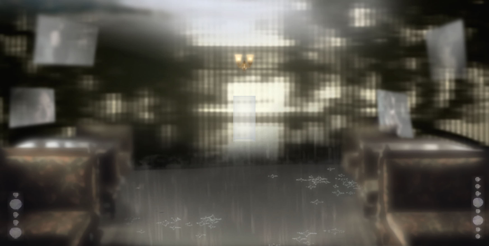 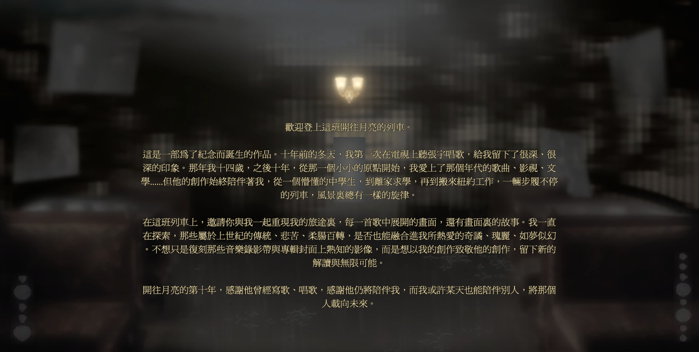
 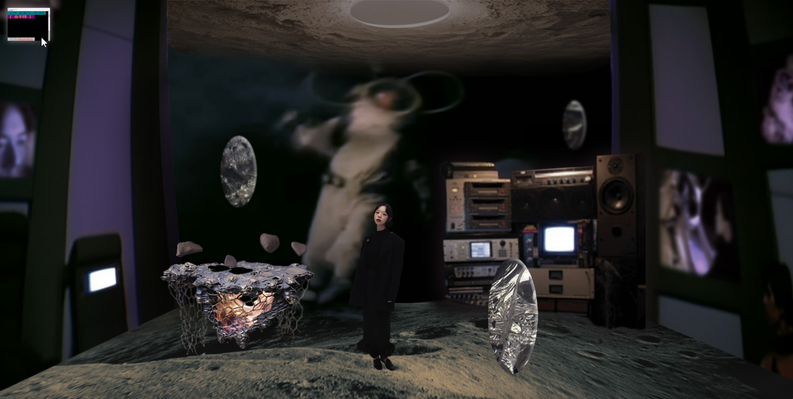
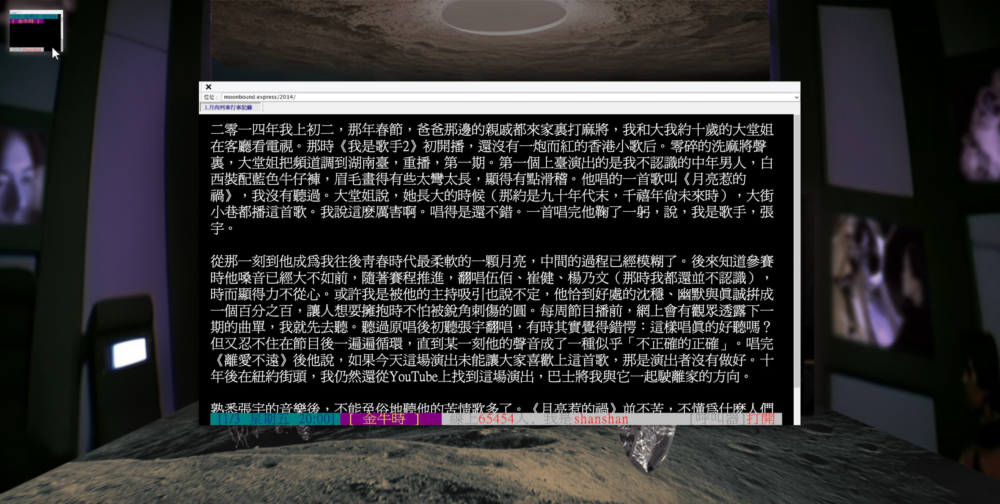
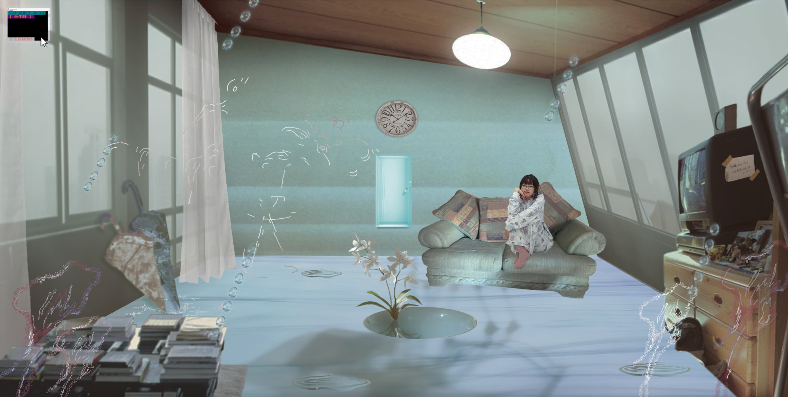
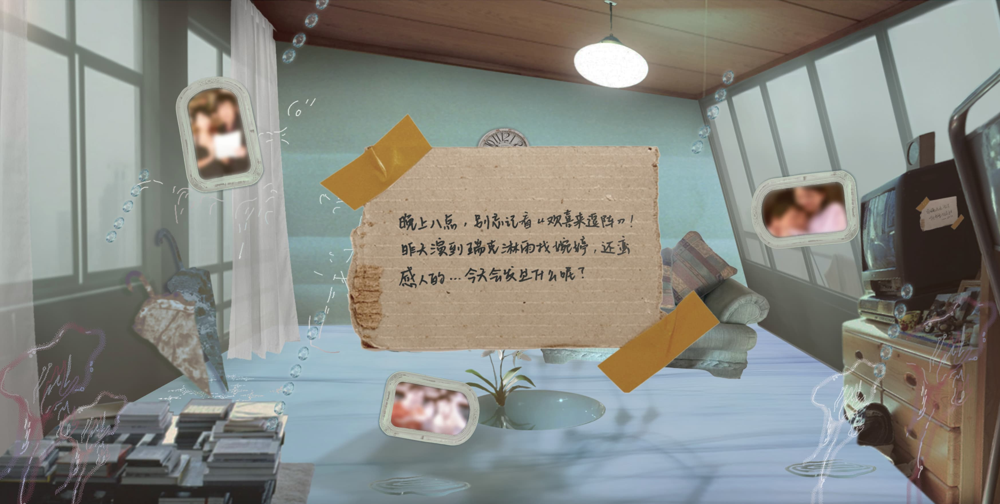
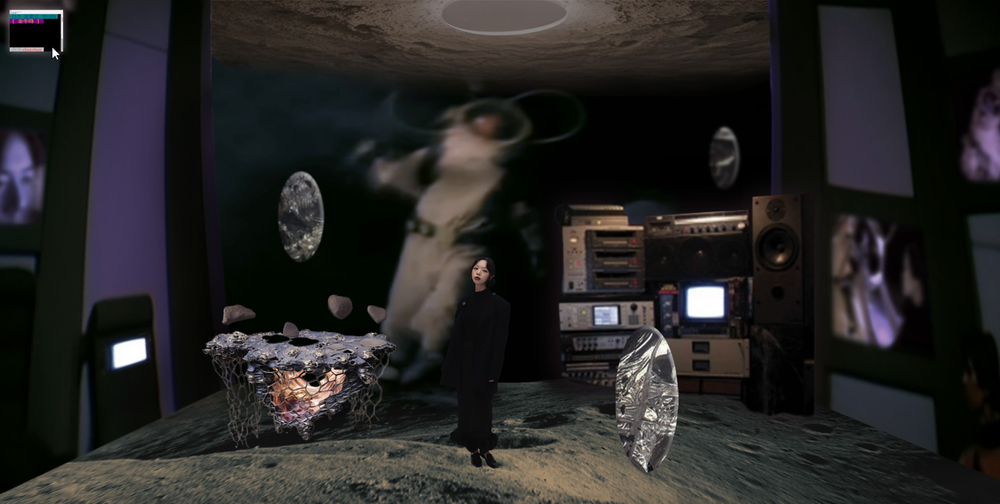
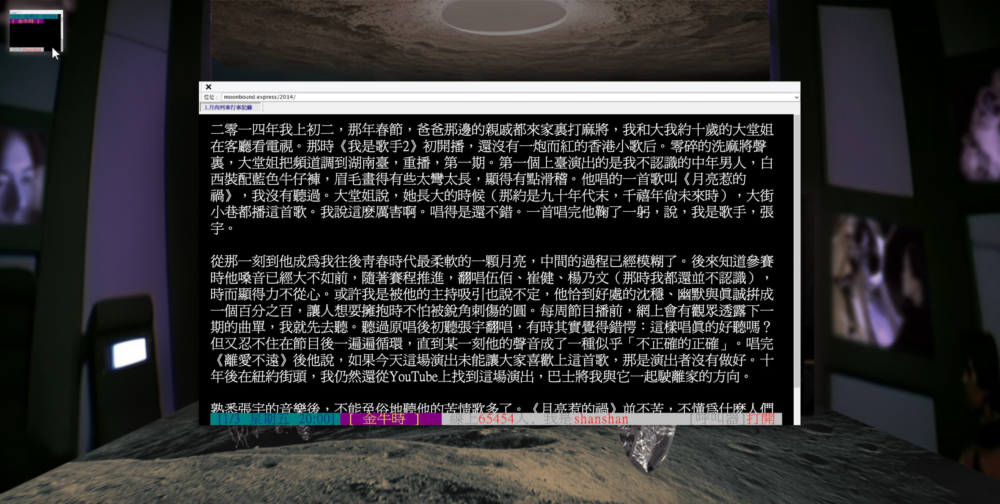
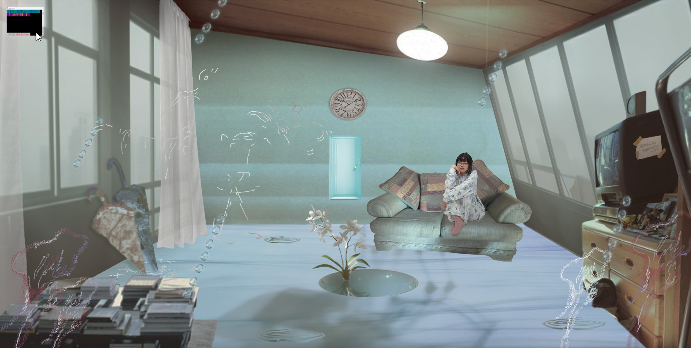
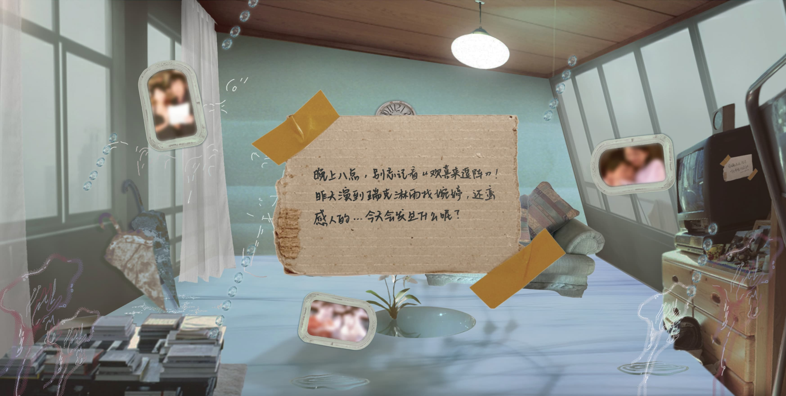
 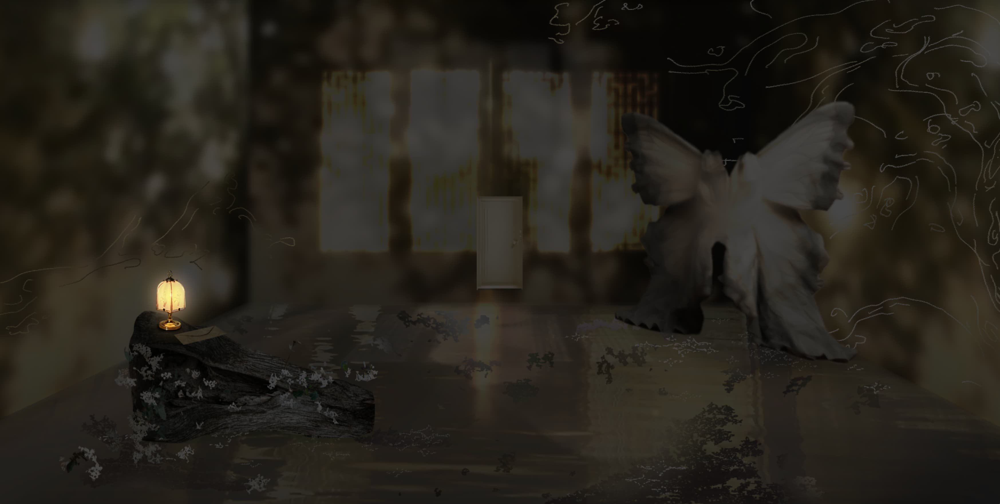
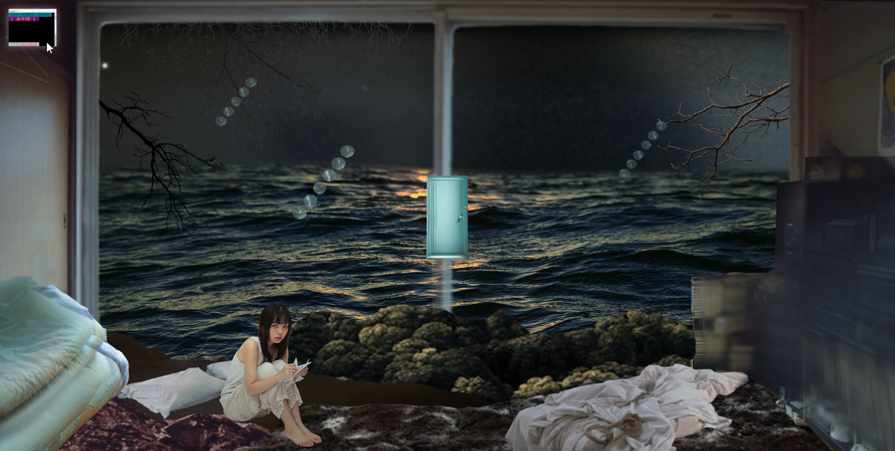
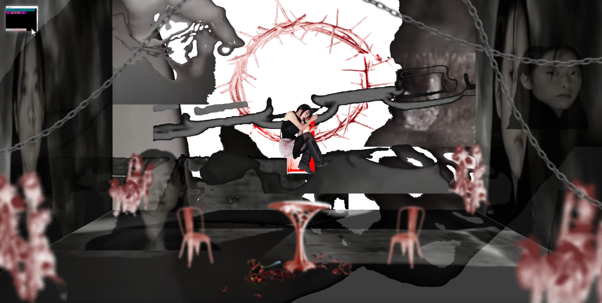
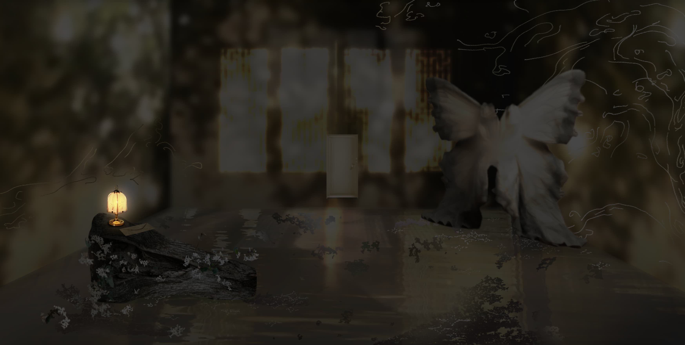
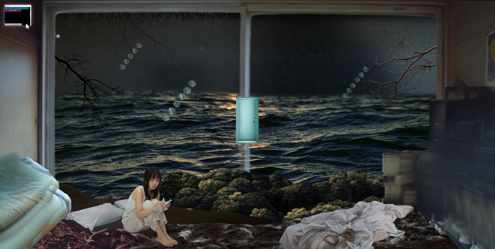
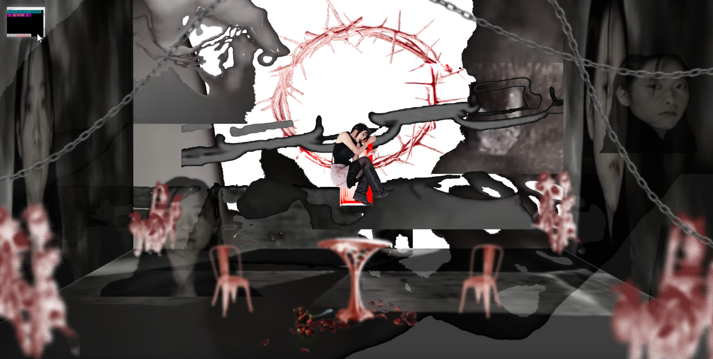